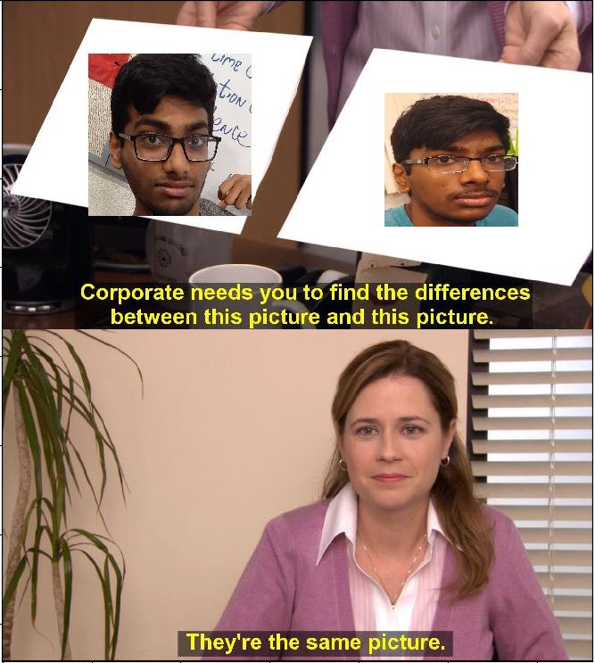

Home
About me
My Portfolio
gang gang portfolio gang.

Leggo bois, Drew made this game and I beta tested with him lol, it’s actually kinda fun
this is our mit app inventor project. Remember, she tryna keep it teeny.

This project is about big boi Miles and his adventure to the grocery store yay
here is an easy joke that took no effort at all to make lol please do not laugh
this is the before image

this is the after image


Question: What happens to the animals that end up in Animal Control?
Sources of data

This image shows a simpulation that represented the populations of a predator, prey, and an invasive species in a single environment. A graph is shown, which summarizes the effect each species has on each other. The predators were birds, the prey were bugs, the invaders were mice, and the food source was grass, which controlled how fast each species replicated.
.jpeg)
The first change we made was to alter the stride speed of each animal, so that they end up moving faster than another species. Since the bugs were causing the bird species to die quickly when the grass wasn't there, we increased the speed of the birds from .3 to .5. We changed the color values of the animal shapes, and since the invaders were reproducing much too quickly for the other species to handle, we delayed their age when they reproduce to a value of 45 instead of 25.
click this to get a better understanding of who I am